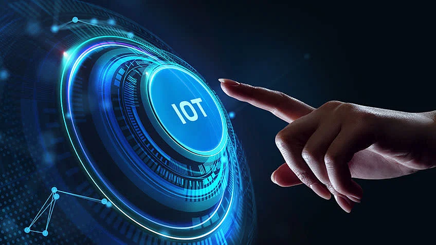

Internet of Things (IoT) for the Future
Ulsan, Oct 9, 2023
Author : Ken Affila Syach Maulana

The Internet of Things (IoT) is a technological revolution that has been reshaping the way we interact with the world around us. In this article, we will explore the profound impact of IoT on various aspects of our lives and how it is poised to shape the future in ways we are only beginning to imagine.
Understanding the Internet of Things
At its core, the Internet of Things refers to the interconnectedness of everyday objects and devices through the internet. These objects, often embedded with sensors and communication hardware, can collect and exchange data, enabling them to interact with each other and with humans. The potential applications of IoT are vast and span across numerous industries.
Transforming Industries
- Smart Homes: IoT has revolutionized the way we manage our households. Smart thermostats, lights, and security systems allow for remote control and automation, enhancing convenience and energy efficiency.
- Healthcare: In the healthcare sector, IoT devices are used for remote patient monitoring, medication adherence, and even wearable fitness trackers. These technologies enable early detection and better management of health conditions.
- Manufacturing: IoT has given rise to smart factories, where machines, sensors, and data analytics work together to optimize production processes, reduce downtime, and minimize waste.
- Agriculture: IoT sensors can monitor soil conditions, weather, and crop health, helping farmers make data-driven decisions to increase yields and reduce resource consumption.
- Transportation: In the automotive industry, IoT powers connected cars with features like autonomous driving, real-time traffic updates, and vehicle-to-vehicle communication, making transportation safer and more efficient.
Enabling Smart Cities
The concept of smart cities is becoming increasingly popular, thanks to IoT. Cities are deploying IoT sensors and data analytics to manage traffic, reduce energy consumption, improve public safety, and enhance the overall quality of life for residents.
- Traffic Management: Smart traffic lights and sensors help optimize traffic flow, reducing congestion and pollution.
- Energy Efficiency: IoT-enabled systems monitor energy usage in buildings, allowing for better control and reduced energy waste.
- Public Safety: IoT devices are used for real-time monitoring of public spaces, helping law enforcement respond quickly to emergencies.
- Waste Management: Smart waste bins notify collection services when they need emptying, reducing operational costs and improving sanitation.
Challenges and Considerations
While the potential of IoT is immense, it comes with challenges. Data privacy and security are major concerns, as more devices collect and transmit sensitive information. Additionally, interoperability and standardization are essential to ensure that IoT devices from different manufacturers can work seamlessly together.
The Future of IoT
As IoT continues to evolve, several trends are shaping its future:
- 5G Connectivity: The rollout of 5G networks will provide faster and more reliable connections, enabling more IoT devices to operate simultaneously with lower latency.
- Edge Computing: Processing data closer to where it is generated (at the edge) will reduce latency and improve real-time decision-making for IoT devices.
- AI and Machine Learning: IoT will increasingly incorporate AI and machine learning algorithms to analyze data and make predictions, leading to smarter and more autonomous systems.
- Blockchain Integration: Blockchain technology can enhance the security and transparency of IoT data, particularly in applications like supply chain management.
Conclusion
The Internet of Things is not just a technological trend; it is a transformational force that is already reshaping industries, cities, and our daily lives. As IoT technologies mature and become more integrated into our world, the potential for innovation and improvement is limitless. However, to fully realize the benefits of IoT while addressing its challenges, it is essential to prioritize security, privacy, and standardization. With responsible development and thoughtful implementation, IoT holds the promise of a brighter, more connected, and more efficient future for us all.